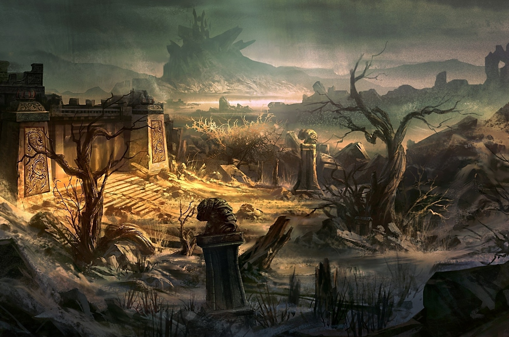
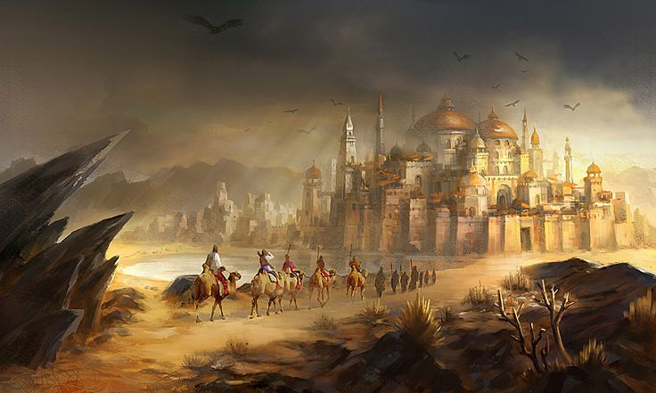
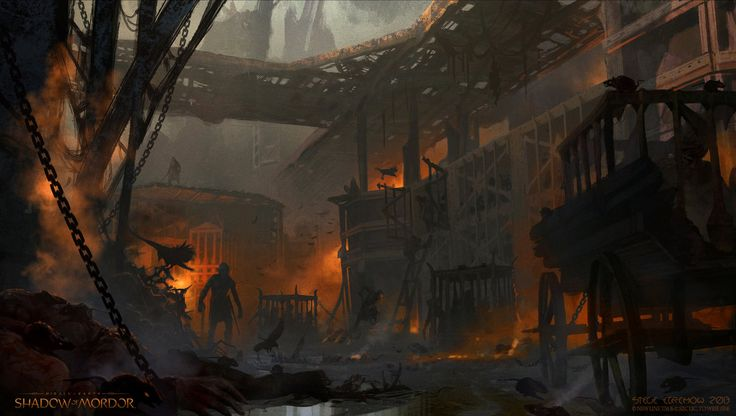
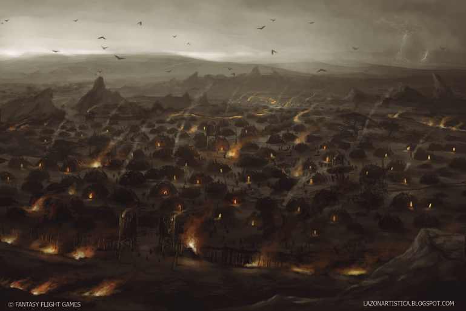

Government
Warrior Tribunal - The Weasals of Yuan Dai are newer country on the continent. Having crossed the great divide, the Yuan Dains conquered the small mouse kingdoms that where orginally there in short order and have started to push their offensive onto the squirrels of Kobito and the rats of Raten.
The government of Yuan Dai are composed of a hall of great warriors with equal voice in votes, the Ulfheonar. The Ulfheonar are Weasal Champions of Yuan Dai, and have great battle prowess, Beserkers; amazing tactics and leaders, Taktikers; or can control and acquire Magicks, Salvie. Beserkers tend to not wear armor, and instead wear skins and other body parts of the enemies they have killed in battle. These warriors are savage and battle crazy and seem to not feel pain. Taktikers are much more civilized in comparison. Often dressed in exotic clothing from lands they have conquered, Taktikers are slow and deliberate, planning many calculated moves moons ahead of time. Salvie are the unquie group of the three. They use a combination of spiritual power and blood magic on the battle field to turn the tide in their favour. Afterwards, they sacrifice the dieing to replense their power.
Terrain
The lands of Yuan Dai have become rivaged sense they have invaded the area. Chosing to seldomly sow the ground with food, they tend to pillage and eat other sentiant mammels instead. This in turn has made the area into a gruesome ghostland that lacks signs of life, as well as the great cities of old turned into ruins.
Common Wildlife
Weasals - Long, gruesome fast warriors capible of strengths much much greater than that of a mouse. They often hunt other mammals to eat instead of eating insects or crops. Their long bodies allow them to create large zones of influence in battle and are often deadly to those who are not prepared to fight them.
Owls
Snakes
Lizards
Insects
Areas of Note
Balder - The Great Hall. Balder is the current great hall of the Ulfheonar. Balder was once a great mouse fortess that resembled the interworkings of Izu, but now it is a ghost of itself. The mice that did not die in the battle for the city have been keep as cattle for the Yuan Dains, forced to breed to be slaughtered when they demand meat. The fort itself has become the staging point for the war with Kobito, and has declined in the moons that the weasals have occupied it becoming a husk of itself.
The Ulfheonar conduct their war councils here, and as such, many spoils of war flow into here before being shipped overseas back to the homelands of the weasals. This often causes fights to break out over whom gets what, and the beserks often via for power in these fights.

Nep - The port to the mainland. The only city in Yuan Dai that has been maintained and upkept since the invasion occured in 960 AT. This was one of the landing spots that the Yuan Dain Weasals used to gain a foot hold on the continent. The city contains many trade goods from the home lands and has been remarked as a little slice of what their culture contains. Most mice dont return from the city, but those that due tell of the wonders of the gods of Yuan Dai, and of the great gold and life sacrifices the weasals give to them.

Heimdall - The Cattle Pits. Heimdall is less of a city and more of a holding and livestock raising center. Much of the livestock of the weasals are those of other species, such as mice rabbits squirrels and rats. They breed these slaves to produce the most healthy and large offspring in order to create the best food product form them, often forcing some of the broodmothers to have many quick litters one right after another.

Forseti - The great front. Having confronted the Rat tribes to the east, the weasals Taktikkers quickly came to the conclusion that the war to take over the great rat tribes would be much harder then they feared. As such, they have begun to fortify and plan the invasion into Raten in Forseti.

Other Regions
Home